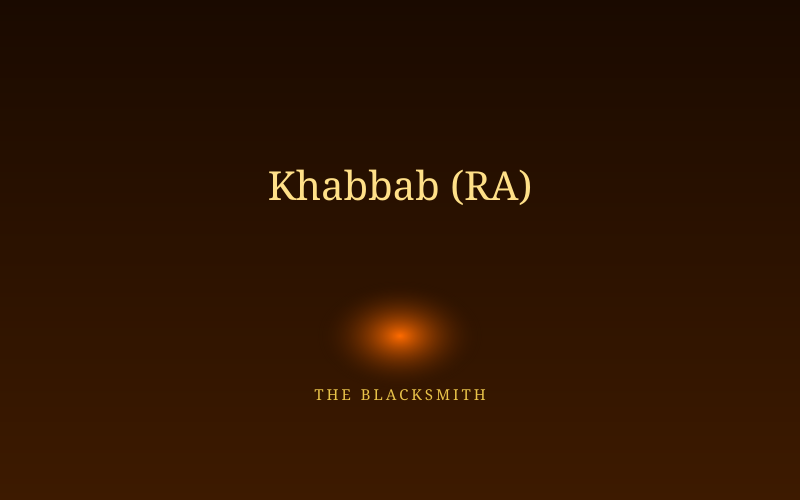

Khabbab ibn al-Aratt (RA)
A craftsman whose own tools of trade were turned into instruments of torture against him.

A Skilled Craftsman, A Vulnerable Man
Khabbab ibn al-Aratt was a blacksmith by trade, known across Makkah for his skill in forging swords and tools. Like Bilal, he had no powerful clan to shield him — and when he accepted Islam, his enemies among Quraysh felt free to act against him without fear of retaliation.
Burned for His Belief
Khabbab's (RA) torment was especially cruel: his tormentors would heat iron until it glowed red and press it against his back, or force him to lie on burning coals, using his own craft's tools against him. He carried the physical scars of this torture for the rest of his life — and in his later years, he would lift his shirt to show younger companions the marks, not as a complaint, but as a living lesson in patience.
"By Allah, this matter will be perfected until a rider travels from San'a to Hadramawt fearing none but Allah... but you are impatient." — The Prophet ﷺ, comforting Khabbab (RA) when he asked why help had not yet come
A Companion Who Outlasted His Torturers
Khabbab (RA) survived the persecution and went on to witness the full triumph of Islam — its public proclamation, its growth in Madinah, and its spread across Arabia. He became known as one of the earliest and most resilient companions, often cited by later generations as living proof that endurance in faith carries its own reward.
- Tortured with heated iron and burning coals for accepting Islam.
- Carried physical scars from his torture for the rest of his life.
- Lived to see the public triumph of the faith he suffered for in secret.
Continue the Archive
See how their steadfastness shaped the strategy of patience and discretion in the secret years.
Explore the Lessons →